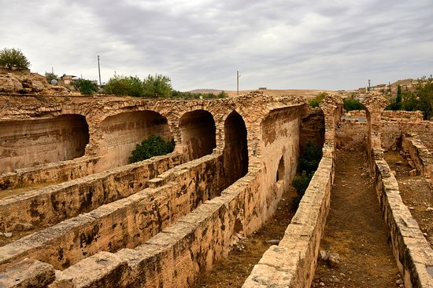

Mezopotamya'nın en önemli yerleşim yerlerinden birisi olan Dara, İmparator Anastasius'un (491-518) girişimleriyle 505 yılında, Doğu Roma İmparatorluğu’nun doğu sınırını Sasanilere karşı korumak için askeri amaçlı bir garnizon kenti olarak inşa ettirdiği sanılmaktadır. 4 kilometrelik alana yayılmış sur yapıları İç kale, kentin kuzeyinde ve 50 metre yüksekliğindeki tepenin üst düzlüğüne kurulmuştur. Mezopotamya ovası ile Tur-Abdin Dağlarının birleştiği yerde kireçtaşı ana kaya üzerinde kurulan kent Kaya içine oyulan yapılardan oluşmuş ve geniş bir alana yayılmıştır.
